Om mig
Mit navn er Maja Tingkær og jeg studerer multimediedesign på Københavns Erhvervsakdami, hvor jeg vil være færdiguddannet i sommeren 2021. Jeg læser multimediedesign, fordi jeg drømmer om at arbejde med kommunikation og grafisk design - både i forbindelse med hjemmesider, reklamer, emballagedesign, bogopsætning samt generel kommunikation og formidling via grafik. Min største interesse indenfor området er derfor klart det grafiske aspekt. Jeg kan godt lide at nørde i Illustrator og Photoshop og fordybe mig i designprocesser eksempelvis under opbygning af et site.
Jeg søger derfor en praktikplads, hvor jeg kan udfolde mine kreative evner og udvikle mine grafiske færdigheder.
!!!!!!!!!!!!!!!!!!!!HER MANGLER LINK TIL CV!!!!!!!!!!!!!!!!!!!!!!!!!!
Se mit CV

Mine kompetencer
Personlige komptencer
- Arbejder effektivt og selvstændigt
- Nysgerrig og idérig
- Imødekommende og kreativ
- Organisatorisk og praktisk
- Har sans for detaljen
- Besidder et agilt mindset
Faglige komptencer
- Skarp i Illustrator, InDesign, Photoshop og Premier Pro
- Bredt kendskab til arbejdet med fotografi
- God forståelse af HTML, CSS samt grundlæggende forståelse af JavaScript
- Erfaring med arbejdet i WordPress og GoBasic
- Kendskab til SoMe-strategier samt barnding
- God forståelse af arbejdet med SEO-optimering
Mine projekter

Content Marketing
/ Mezcal de Pasión
Tekst om content marketing opgaven, forløbet og hvor tilfreds jeg er, kommer her.
Besøg sitet

Webfeature
/ Et anderledes syn på livet
Tekst om webfeature ogpaven, forløbet og hvor tilfreds jeg er, kommer her.
Besøg sitet

2. semester eksamen
/ Oliver Sundqvist
Tekst om 2. semester ogpaven, forløbet og min rolle kommer her.
Besøg sitet

Animation
/ Lonely Monkey spil
Tekst om animation ogpaven, forløbet og hvor tilfreds jeg er, kommer her.
Prøv spillet
Andre projekter
/ Collager, keramik og grafisk arbejde
Tekst om hvad jeg ellers har lavet
!!!!!! HER MANGLER LINK TIL EN PDF-FIL MED MIT ARBEJDE !!!!!!
Klik her for at se mere
Min erfaring
Erhvervserfaring
Jeg har siden august måned i år arbejdet som studentermedhjælper i presse- og kommunikationsafdelingen på GEUS (de nationale geologiske undersøgelser i Danmark og Grønland). Her arbejder jeg primært med deres hjemmesider, herunder en del hjemmesider tilhørende forskellige geologiske projekter. Her har jeg arbejdet med følgende:
- Generel opdatering af hjemmesider - inklusiv intranet
- Tilgængelighed i forbindelse med den nye tilgængelighedslov, herunder arbejdet med at formulere tilgængelighedserklæringer.
- Sat cookie- og privatlivspolitik op.
- Produceret nye sider til geus.dk.
- Oprettet et team til kampagnen "vi cykler til arbejde" !!
Derudover har jeg førhen arbejdet på en række cafeer og som fuldtidspiccoline i Sundheds- og Ældreministeriet. Disse jobs har givet mig erfaring i forhold til håndtering af pressede situationer og jeg har lært at tage imod nye former for opgaver med et smil på læben samt at arbejde struktureret og selvstændigt.
Livserfaring
Siden jeg i sommeren 2016 blev student, har jeg rejst en hel del. Først rejste jeg til Sydamerika i fire måneder alene, hvor jeg backpackede rundt i Peru, Bolivia, Argentina og Chile. Det var en stor oplevelse at rejse på helt egen hånd og jeg ville med glæde gøre det igen! Siden da har jeg været på kortere rejser til Egypten, Libanon og Mexico. At rejse er for mig at leve og hver rejse har beriget mig enormt.
Mine interesser
 
